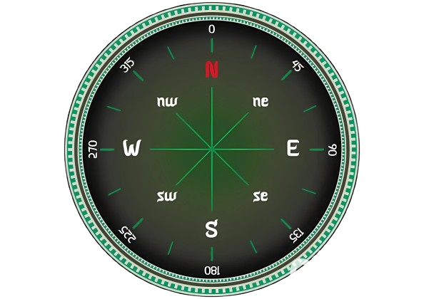

<div class="home_main">
    <!-- <div class="compass">
        
        <div class="needle_div" [style.transform]="'rotate(' + rotationDegree + 'deg)'">
            <div class="needle"></div>
        </div>
    </div>
     -->


    <div data-t="{&quot;n&quot;:&quot;WeatherDetailsWind&quot;,&quot;t&quot;:8}">
        <div data-t="{&quot;n&quot;:&quot;card&quot;,&quot;c.i&quot;:&quot;card&quot;,&quot;c.t&quot;:1,&quot;c.v&quot;:&quot;weather&quot;,&quot;c.c&quot;:&quot;weather&quot;}"
            class="container-DS-EntryPoint1-2" data-theme="dark"><a class="jumpLink-DS-EntryPoint1-1" aria-label="Wind"
                id="weatherDetailsWindCardLink109"
                href="https://www.msn.com/en-in/weather/hourlyforecast/in-Madhuravoyal,Tamil-Nadu?loc=eyJsIjoiTWFkaHVyYXZveWFsIiwiciI6IlRhbWlsIE5hZHUiLCJyMiI6IkNoZW5uYWkiLCJjIjoiSW5kaWEiLCJpIjoiSU4iLCJ0IjoxMDIsImciOiJlbi1pbiIsIngiOiI4MC4xNjAxIiwieSI6IjEzLjA2NCJ9&amp;weadegreetype=C&amp;ocid=msedgdhp&amp;fcsttab=wind&amp;cvid=915dd1151c1b4c75f67489b1bf71ae54&amp;ei=19"
                data-t="{&quot;n&quot;:&quot;windCardJump&quot;,&quot;b&quot;:1,&quot;c.i&quot;:&quot;windCardJump&quot;,&quot;c.t&quot;:1,&quot;c.v&quot;:&quot;weather&quot;,&quot;c.c&quot;:&quot;weather&quot;}"
                target="_blank"></a>
            <div class="title-DS-EntryPoint1-2">Wind</div>
            <div class="dash-DS-EntryPoint1-1">
                <div data-t="{&quot;n&quot;:&quot;dash&quot;,&quot;c.i&quot;:&quot;dash&quot;,&quot;c.t&quot;:1,&quot;c.v&quot;:&quot;weather&quot;,&quot;c.c&quot;:&quot;weather&quot;}"
                    data-theme="dark" class="container-DS-EntryPoint1-3" style="width: 110px; height: 110px;"><svg
                        width="110" height="110" viewBox="0 0 180 180" fill="none" xmlns="http://www.w3.org/2000/svg">
                        <path d="M90 10 A 80 80, 0, 0, 1, 165.18 62.64 " fill="none"
                            class="windPathBackground-DS-EntryPoint1-1" stroke-width="8" stroke-linecap="round"
                            stroke-opacity="0.1" transform="rotate(10 90 90)"></path>
                        <path d="M90 10 A 80 80, 0, 0, 1, 165.18 62.64 " fill="none"
                            class="windPathBackground-DS-EntryPoint1-1" stroke-width="8" stroke-linecap="round"
                            stroke-opacity="0.1" transform="rotate(100 90 90)"></path>
                        <path d="M90 10 A 80 80, 0, 0, 1, 165.18 62.64 " fill="none"
                            class="windPathBackground-DS-EntryPoint1-1" stroke-width="8" stroke-linecap="round"
                            stroke-opacity="0.1" transform="rotate(190 90 90)"></path>
                        <path d="M90 10 A 80 80, 0, 0, 1, 165.18 62.64 " fill="none"
                            class="windPathBackground-DS-EntryPoint1-1" stroke-width="8" stroke-linecap="round"
                            stroke-opacity="0.1" transform="rotate(280 90 90)"></path>
                        <path
                            d="M160.96086665425776 126.93988905880269A 80 80, 0, 0, 1, 114.05646396034186 166.29735605985815"
                            fill="none" stroke="rgba(119, 183, 247, 1)" stroke-width="8" stroke-linecap="round"></path>
                        <g>
                            <path
                                d="M 86.325 40.3742 C 86.9141 37.7765 90.5908 37.7098 91.2738 40.2843 L 112.0053 118.42840000000001 C 113.7162 124.8774 108.87360000000001 131.20420000000001 102.2016 131.23680000000002 L 78.5064 131.35250000000002 C 71.94605 131.3845 67.06373 125.3014 68.51471 118.9034 L 86.325 40.3742Z"
                                fill="rgba(119, 183, 247, 1)" transform="rotate(-40 90 90)">
                                <animateMotion id="windDirectionAni109" dur="0.8s" repeatCount="0"
                                    begin="weatherDetailsWindCardLink109.mouseenter"
                                    end="weatherDetailsWindCardLink109.mouseleave" path="M0 0Z"></animateMotion>
                                <animateMotion dur="1.5s" begin="windDirectionAni109.end"
                                    end="weatherDetailsWindCardLink109.mouseleave" repeatCount="indefinite"
                                    path="M0 0Z"></animateMotion>
                            </path>
                        </g>
                    </svg>
                    <div class="text-DS-EntryPoint1-1 north-DS-EntryPoint1-1">N</div>
                    <div class="text-DS-EntryPoint1-1 south-DS-EntryPoint1-1">S</div>
                    <div class="text-DS-EntryPoint1-1 west-DS-EntryPoint1-1">W</div>
                    <div class="text-DS-EntryPoint1-1 east-DS-EntryPoint1-1">E</div>
                </div>
                <div class="metrics-DS-EntryPoint1-1">
                    <div class="dir-DS-EntryPoint1-1" title="From SE (140°)">From SE (140°)</div>
                    <div class="numberGroup-DS-EntryPoint1-1">
                        <div class="number-DS-EntryPoint1-1">10</div>
                        <div class="unitGroup-DS-EntryPoint1-1">
                            <div class="unit-DS-EntryPoint1-1">km/h</div>
                            <div class="unitName-DS-EntryPoint1-1">Wind Speed</div>
                        </div>
                    </div>
                    <div class="numberGroup-DS-EntryPoint1-1">
                        <div class="number-DS-EntryPoint1-1">40</div>
                        <div class="unitGroup-DS-EntryPoint1-1">
                            <div class="unit-DS-EntryPoint1-1">km/h</div>
                            <div class="unitName-DS-EntryPoint1-1">Wind Gust</div>
                        </div>
                    </div>
                </div>
            </div>
            <div
                data-t="{&quot;n&quot;:&quot;windCard&quot;,&quot;c.i&quot;:&quot;windCard&quot;,&quot;c.t&quot;:1,&quot;c.v&quot;:&quot;weather&quot;,&quot;c.c&quot;:&quot;weather&quot;}">
                <div class="contentInfoTitleBox-DS-EntryPoint1-1">
                    <div title="Force: 2
(Light Breeze)" class="contentInfoTitle-DS-EntryPoint1-1">Force: 2
                        (Light Breeze)</div>
                </div><a class="contentInfoLink-DS-EntryPoint1-1" tabindex="-1" title="Currently the wind is coming from SE averaging 10 km/h (gusting to 40) and remains steady.
Overnight average wind speeds are expected to see a peak of 3 km/h (gusting to 19) at 12:00 am coming from S.
Tomorrow's wind speeds are expected to be similar to today."
                    href="https://www.msn.com/en-in/weather/hourlyforecast/in-Madhuravoyal,Tamil-Nadu?loc=eyJsIjoiTWFkaHVyYXZveWFsIiwiciI6IlRhbWlsIE5hZHUiLCJyMiI6IkNoZW5uYWkiLCJjIjoiSW5kaWEiLCJpIjoiSU4iLCJ0IjoxMDIsImciOiJlbi1pbiIsIngiOiI4MC4xNjAxIiwieSI6IjEzLjA2NCJ9&amp;weadegreetype=C&amp;ocid=msedgdhp&amp;fcsttab=wind"
                    data-t="{&quot;n&quot;:&quot;windCardJump&quot;,&quot;b&quot;:1,&quot;c.i&quot;:&quot;windCardJump&quot;,&quot;c.t&quot;:1,&quot;c.v&quot;:&quot;weather&quot;,&quot;c.c&quot;:&quot;weather&quot;}"
                    target="_blank">
                    <div class="contentInfoDesc-DS-EntryPoint1-1">Steady with averages holding at 4 km/h (gusts to 22)
                        expected from the S through the night.
                        Tomorrow's wind speeds are expected to be similar to today.</div>
                </a>
            </div>
        </div>
    </div>


</div>